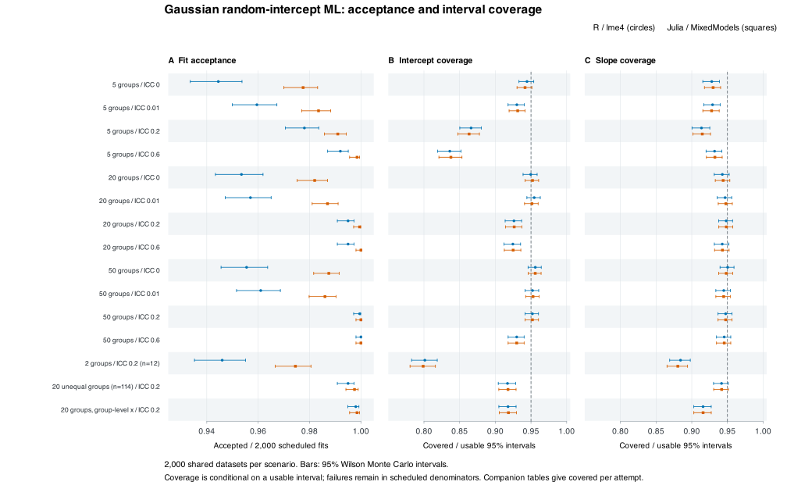

Gaussian random-intercept reliability map
This map used Julia 1.12.6 / MixedModels 4.36.0 and R 4.6.1 / lme4 2.0.6. It predates a later R guard correction for very small response units; no campaign was rerun. The correction and its unchanged classification of the campaign inputs are documented in the runtime and source boundary.
This fixed 15-scenario study of Gaussian random-intercept maximum likelihood (ML) retained 60,000 scheduled fits on 30,000 shared datasets. It recorded 58,985 accepted fits, 741 fit errors and 274 nonconvergences. Approximate fixed-effect intervals showed substantial undercoverage with very few groups. Cross-engine comparisons also exceeded some frozen numerical tolerances. These findings describe this design and these frozen implementations.

Open or download the full-size figure: SVG, PDF, PNG.


Figure 1. Accepted fits and fixed-effect interval coverage, by scenario and engine. Each scenario has 2,000 datasets. ICC denotes conditional residual intraclass correlation given the predictor. Acceptance uses all scheduled attempts; coverage uses accepted fits with usable intervals. Whiskers show 95% Wilson intervals for Monte Carlo uncertainty. Dashed lines mark nominal 0.95 coverage, not an acceptance criterion. R and Julia results share datasets, so their points are paired.
Design and inferential targets
The generating model is $y_{ij}=\alpha+\beta x_{ij}+u_j+\epsilon_{ij}$, with independent $u_j\sim N(0,\tau^2)$ and $\epsilon_{ij}\sim N(0,\sigma^2)$. All scenarios use $\alpha=1$, $\beta=0.7$ and $\sigma^2=1$. The conditional residual intraclass correlation (ICC), given the predictor, is $\tau^2/(\tau^2+\sigma^2)$.
The main grid crosses 5, 20 and 50 groups, six observations per group, and conditional ICC values 0, 0.01, 0.2 and 0.6. Three further scenarios use two groups; 20 unequal groups with sizes cycling through 2, 4 and 12 (114 observations in total); or a group-level predictor with 20 groups and six observations per group. Each further scenario has conditional ICC 0.2.
Predictors are independent standard-normal draws. Observation-level scenarios draw one value per observation. The group-level scenario draws one value per group and expands it to that group’s observations. Predictors are independent of group effects and residual errors. For a group-level predictor, conditional ICC does not equal unconditional same-group response correlation. The design table lists all 15 scenarios.
Both engines fit y ~ 1 + x + (1 | group) by maximum likelihood, not REML. The R adapter uses lme4; the Julia adapter uses MixedModels. Both report point estimates for the intercept, slope, residual variance and random-intercept variance. Approximate normal plug-in intervals are evaluated at 0.90 and 0.95 for the two fixed effects. There are no variance-component intervals in this study.
Every dataset is shared byte-for-byte between engines, with retained raw-data and fitter-input hashes. Equal cross-language seed labels alone would not establish identical data. The first complete fixed sample is used whole; no partial runs are pooled or stitched.
Fit acceptance and failures
| Engine | Scheduled | Accepted | Fit errors | Nonconverged |
|---|---|---|---|---|
| R / lme4 | 30,000 | 29,259 | 741 | 0 |
| Julia / MixedModels | 30,000 | 29,726 | 0 | 274 |
All scheduled attempts have terminal outcomes; none are interrupted or not started. Every cell-engine denominator is 2,000. Across scenarios, acceptance ranges from 94.45% to 100% for R and from 97.45% to 100% for Julia. All 741 R errors carry the message lme4 optimizer failed with code 3. All 274 Julia nonconvergences carry optimizer status ROUNDOFF_LIMITED. These messages identify recorded failure classes; they do not establish the root cause.
The stratum map and status table retain per-scenario counts and Wilson limits. Point-estimate summaries use accepted finite estimates. These conditional summaries can be affected by selection through fit success.
Interval coverage and Monte Carlo uncertainty
All accepted fits supplied usable fixed-effect intervals in this sample. Failed or nonconverged attempts still remain in scheduled denominators. Three quantities answer different questions: usable-interval rate = usable / scheduled; conditional coverage = covered / usable; covered per attempt = covered / scheduled. Coverage includes endpoints.
| Scenario and target; nominal 95% interval | R: covered / usable, coverage (95% Wilson limits) | Julia: covered / usable, coverage (95% Wilson limits) |
|---|---|---|
| Two groups, ICC 0.2: intercept | 1516/1892 = 0.8013 (0.7827, 0.8186) | 1557/1949 = 0.7989 (0.7805, 0.8161) |
| Two groups, ICC 0.2: slope | 1673/1892 = 0.8842 (0.8690, 0.8979) | 1716/1949 = 0.8805 (0.8653, 0.8941) |
| Five groups, ICC 0.6: intercept | 1659/1984 = 0.8362 (0.8193, 0.8518) | 1673/1997 = 0.8378 (0.8209, 0.8533) |
| Fifty groups, ICC 0.6: intercept | 1860/2000 = 0.9300 (0.9180, 0.9404) | 1860/2000 = 0.9300 (0.9180, 0.9404) |
| Group-level predictor, ICC 0.2: slope | 1828/1996 = 0.9158 (0.9028, 0.9272) | 1829/1997 = 0.9159 (0.9029, 0.9273) |
For the two-group intercept, covered per scheduled attempt is 1516/2000 = 0.7580 for R and 1557/2000 = 0.7785 for Julia. Improved fit acceptance and interval calibration are therefore separate properties. The full interval table gives both nominal levels, all denominators, usability, conditional coverage, covered per attempt, mean widths and Wilson limits.
Wilson intervals quantify finite simulation uncertainty for each displayed fraction. They are not confidence intervals for the model parameter, simultaneous limits across scenarios, or independent tests of a difference between engines. The figure and examples are descriptive; no additional inferential cutoff was introduced.
Point recovery and variance boundaries
The point table gives bias, empirical standard deviation, root mean square error (RMSE), quantiles and Monte Carlo standard errors (MCSEs), conditional on accepted finite estimates. For random-intercept variance truth 0.25 with two groups, bias is -0.115305 (MCSE 0.006702) for R and -0.117864 (MCSE 0.006565) for Julia. With five groups and variance truth 1.5, the corresponding biases are -0.353103 (MCSE 0.021676) and -0.355984 (MCSE 0.021572).
The shared bias and undercoverage are consistent with limitations of this few-group ML/Wald design. This study does not isolate their causal mechanism or establish a solver defect. There is no variance-component coverage result, because variance intervals were not fitted.
Boundary summaries use accepted fits and distinguish literal zero from threshold flags:
| Engine | Accepted | Literal τ² = 0 | τ² ≤ 10⁻¹⁰ | Fitted ICC ≤ 10⁻⁸ |
|---|---|---|---|---|
| lme4 | 29,259 | 5,272 | 8,265 | 8,265 |
| MixedModels | 29,726 | 8,668 | 8,668 | 8,668 |
The R adapter’s diagnostic named exact_zero uses τ² ≤ 10⁻¹⁰; it is not literal equality. The analyzer reports literal τ² = 0 separately from the near-boundary ICC flag. Equal observed counts under two rules do not make the rules interchangeable. See boundary counts.
Paired numerical agreement
There are 29,000 jointly accepted pairs. Comparisons use the same scenario, replication and target, with Julia minus R as the difference. The emitted Julia objective is already the total ML negative log-likelihood (NLL); its adapter has divided the native objective by two, so no second division is made.
| Scenario | Replication | Julia minus R total NLL | Frozen absolute tolerance |
|---|---|---|---|
| 20 groups, ICC 0.6 | 729 | 0.000001904355258 | 0.000001 |
| 50 groups, ICC 0.01 | 189 | 0.000007787071809 | 0.000001 |
These are the two objective comparisons outside the frozen tolerance. Point-estimate exceedances total 225: intercept 12, slope 59, residual variance 7 and random-intercept variance 147, each from 29,000 evaluable target pairs. Interval endpoints add 1,187 exceedances across 232,000 evaluable endpoint comparisons. These repeated metrics share datasets and must not be counted as independent failures.
The fixed comparison rules are |Julia − R| ≤ 10⁻⁶ × (1 + |R|) for coefficients and interval endpoints, and ≤ 10⁻⁵ × (1 + |R|) for variance point estimates. Total NLL uses the absolute 10⁻⁶ rule. No tolerance was widened. The comparison counts, individual exceedance records, objective discrepancies and paired differences retain the details.
The discrepancies are small in absolute terms in this study, but strict agreement within every frozen tolerance was not achieved. Neither close average agreement nor shared coverage failure establishes package-wide equivalence or a global optimum.
Scope and reproducibility
This evidence covers the fixed Gaussian random-intercept ML design above. It does not cover REML, random slopes, GLMMs, Bayesian models, variance-component intervals, other sample-size grids or arbitrary versions of the packages. It supports a finite-design reliability map, not a blanket parity or calibration claim.
Completion provenance uses recovered native-run evidence. The original outer execution wrapper’s exit status and process-group cleanup remain unknown; the recovered evidence does not invent those facts. This provenance boundary does not remove any fit failures or scientific discrepancies.
The analysis follows the frozen metric contract. It uses a reconstructed analyzer whose source is retained; the original earlier analyzer source was not recovered. Point metrics use accepted finite estimates; interval summaries retain all scheduled attempts and separately identify unusable intervals. Bias MCSE uses the empirical standard deviation divided by the square root of the evaluable count; RMSE MCSE uses the frozen delta-method rule. No MCSE is claimed for empirical standard deviation or quantiles.
The public provenance record binds the input manifest, attempt ledger, analyzer and metric-contract hashes. Reproduce the figure from the portable tables without running a model. Source-code and dataset hashes identify the frozen study rather than asserting the state of a package’s current development branch.
Download the portable report bundle and its file hashes.